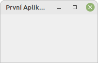

import sys
from PyQt5.QtWidgets import QApplication
app = QApplication(sys.argv)
sys.exit(app.exec())3 Aplikace s GUI
Zásadní odlišností aplikací s uživatelským rozhraním a menšími skripty, či aplikacemi pro příkazovou řádku, spočívá ve faktu, že zatímco tyto jednodušší aplikace mají jasně určený počátek a konec a kód mezi nimi je prováděn lineárně, v GUI aplikacích se kód vykonává na základě interakce uživatele s programem. To vyžaduje principiálně jiný přístup ke kódu, jednak z hlediska managentu kódu, ale i mentálně. Běh programu není v tomto případě řízen pouze strukturou kódu, ale navíc i akcemi, které se uživatel provede v GUI.
GUI aplikace po spuštění inicializují nekonečnou smyčku, která čeká na vstupy (v podobě interakce s GUI) od uživatele, na něž následně reaguje, obvykle spouštěním dílčích částí kódu aplikace. Tato nekonečná smyčka končí až uzavřením aplikace. Už pouze tato funkcinalita je na vytvoření netriviální, naštěstí PyQt tento process zjednodušuje na naprosté minimum. V modulu PyQt5.QtWidgets existuje třída QApplication, která se postará o vytvoření aplikace a management akcí v této aplikaci, aniž by bylo nutné ze strany programátora do tohoto procesu výrazněji zasahovat.
V pythonu vytvoříme aplikaci jednoduše:
V tomto bloku kódu je vhodné vysvětlit několik konstrukcí. sys.argv jsou argumenty příkazové řádky, ve formě seznamu s textovými hodnotami, s nimiž byl tento python spuštěný. Pokud aplikace nemusí podporovat argumenty příkazové řádky, lze zde předat i prázdný seznam []. Samotná aplikace se spustí příkazem app.exec().
Warning
Ve starších verzích pythonu se používala i verze app.exec_(), neboť příkaz exec() byl vyhrazené klíčové slovo. Od verze Pythonu 3.x už toto není problém a lze používat obě verze volání zaměnitelně.
Tímto voláním se spustí samotná aplikace a její nekončná smyčka, pro interakci s uživatelem. Takto vytvořená aplikace poběží do nekonečna a není ani jak zjevně ukončit, neboť jsme jí nepřiřadili žádné GUI. Konstrukce sys.exit() ukončí Python v momentě kdy se ukončí příkaz uvnitř závorek. V tomto případě se Python ukončí jakmile se ukončí aplikace.
Chceme-li vytvořené aplikaci přidat nějaké GUI vytvoříme tzv. hlavní okno (QMainWindow). Každá aplikace by ideálně měla mít takovéto hlavní okno s nímž uživatel pracuje. Existence hlavního okna není nezbytnou podmínkou, aplikace může fungovat i bez něj, pouze s dílčími okny, ale z uživatelského hlediska je rozumnější, pokud toho hlavní okno existuje.
import sys
from PyQt5.QtWidgets import QApplication, QMainWindow
app = QApplication(sys.argv)
mw = QMainWindow()
mw.setWindowTitle("První Aplikace")
mw.show()
sys.exit(app.exec())
Při spuštění tohoto kódu se již aplikace zobrazí, byť s prázdným oknem (Obr. 3.1), a lze i ji korektně ukončit kliknutím na ikonu křížku (či jiného prvku, dle nastavení systému). Aplikace je otevřená v poměrně malém okně, což je výchozí stav, protože neobsahuje žádné GUI elementy. PyQT řeší základní funkčnost aplikace, tzv. minimalizaci, maximalizaci GUI a ukončení aplikace. Díky tomu těmto položkám nemusí věnovat pozornost programátor. Mimo to v aplikaci běží již zmíněná smyčka, čekající na interakci s uživatelem. Díky ní bude, jakmile do aplikace přidáme ovládací prvky, možné s aplikací interagovat.
Ukázkový kód pro tuto aplikaci je dostupný jako příklad: empty_application.py.
Aplikace přejímají nativně vzhled ze systému, aby se co nejlépe integrovaly do stávajícího vizuálního stylu operačního systému. Toto chování lze změnit. Pro potřeby těchto skript budeme předpokládat, že je žádoucí, aby aplikace používaly systémový vzhled.
QGIS
V QGIS lze mezi různými styly vzhledu přepínat v menu Nastavení -> Nastavení, záložka Obecné, položka Styl. Výchozí nastavení se určí při prvním spuštění QGIS dle platformy.
3.1 Aplikace bez GUI
Qt řeší i problematiku aplikací, které nemají GUI, ale přesto vyžadují běhovou smyčku, která reaguje na vnější vstupy. Typicky se jedná o aplikace, které čekají na zprávu, kterou obvykle obdrží po síti. Na základě této zprávy, spustí aplikace odpovídající řetězec akcí. Stejně tak může aplikace v pravidelném intervalu kontrolovat data a v případě jejich změny provést nějakou akci. Tento typ aplikací nemusí řešit interakce s GUI, je tedy funkčně značně jednodušší. V modulu PyQt5.QtCore je pro tyto situace třída QCoreApplication, která je určena pro tvorbu aplikací bez uživatelského rozhraní.